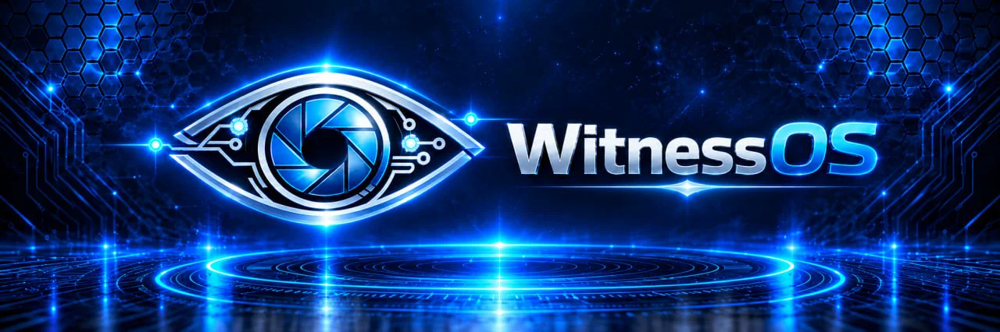
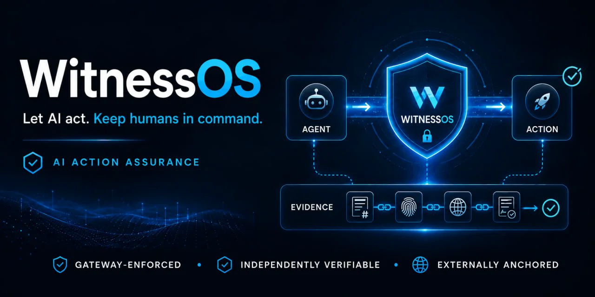
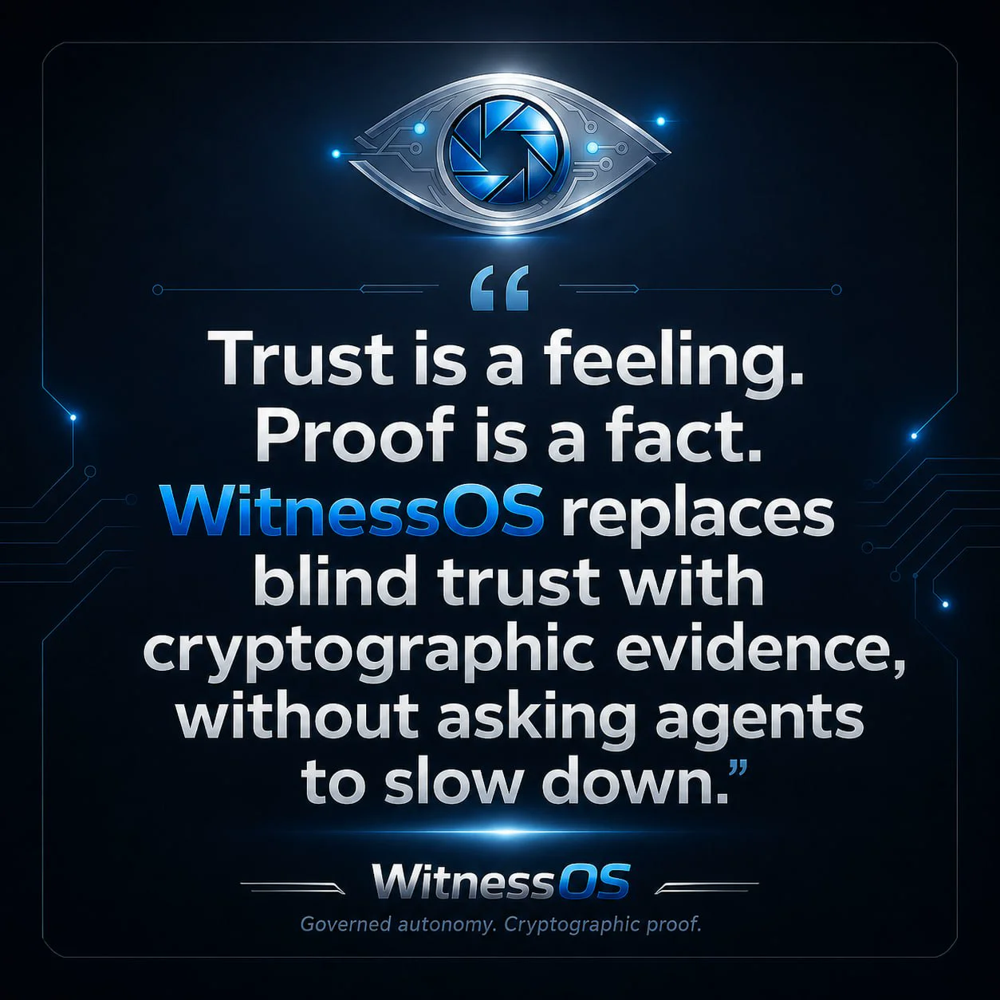

Action proposed
The agent proposes an action with its target, parameters, scope and asserted intent.

WitnessOS is not an operating system for machines. It is the operating layer for governed agent action, the kernel between "the agent wants to" and "the agent may".
Deterministic policy, human approval, tamper-evident receipts and independent timestamps. Auditor-verifiable with zero trust in us.

AI governance is moving from guidance to evidence. Audit, risk and insurance teams will ask organisations to prove what autonomous systems actually did, not simply show what a platform says happened.

"Show me, don't tell me."
When an agent spends money, sends a message or touches a governed action, who can prove what happened, who approved it and when? Self-attested logs that a vendor could edit are not enough.
The agent proposes an action with its target, parameters, scope and asserted intent.
Deterministic, OPA/Rego-compatible policy returns Allow, Deny, Conditional or Escalate.
The evaluation produces a tamper-evident receipt with the action hash, policy version, context, decision, timestamp and chain of custody.
Execution proceeds only when sanctioned. Denied actions receive structured remediation from advisory to failsafe, with every escalation recorded.
The public ladder closes at E4. Every grade describes the evidence a receipt can support, and unprovable gates cap the grade down, never up.
POLICY
OPA-native Rego policy-as-code, evaluated deterministically before action.
EVIDENCE
SHA-256 signed, tamper-evident and exportable as audit bundles.
REMEDIATION
Structured escalation from advisory guidance to hard failsafe.
BINDING
TPM or fingerprint binding for governed licensing.
INTEGRATION
Designed for REST, WebSocket and SDK integration.
CONTROL
System, environment and action-level policy tiers.
Status: all three lanes are governed and anchored. Published receipts grade E2: E4 requires legitimate E3 corroborated evidence plus independently authenticated external anchoring. WitnessOS Gateway v0.1.0 and witnessos-verifier v0.3.5 introduce the hardened Evidence Grade model.
WitnessOS implements technical standards (RFC 3161 timestamping, OPA/Rego policy, SHA-256 chaining, X.509-style verification) and produces evidence designed to support organisations meeting global obligations: EU AI Act Article 12 record-keeping + Article 14 human oversight, GDPR accountability, NIST AI RMF, ISO/IEC 42001, ISO 27001/SOC 2 audit evidence.
The Australian Information Security Manual requires a cryptographic bill of materials to be produced and made available to consumers of software. It also requires a post-quantum transition plan to be developed, implemented and maintained. The milestones are dated: a refined plan by the end of 2026, transition commenced by the end of 2028, complete by the end of 2030. We produce the inventory and the plan as signed records that you verify without trusting us.
Algorithms, protocols, libraries, certificates and key custody for one boundary, in CycloneDX 1.6.
Each asset graded by quantum exposure against the lifetime of the data it protects.
Sequencing, owners and milestones against the 2026, 2028 and 2030 dates.
The inventory and the plan bound to one root and independently timestamped.
A changed estate fails verification and names the exact asset that moved.
Strict mode can issue E4: corroborated E3 evidence plus an independently authenticated RFC 3161 anchor.
Altered records cannot reach E4.
Unsanctioned action types fail closed.
Evidence degradation cannot drift silently.
Including real-CA timestamp verification.
WitnessOS is the runtime governance layer for autonomous agents, developed by Empire Labs Pty Ltd. It sits between an agent wanting to act and the agent being allowed to act, applying deterministic policy, human approval and tamper-evident evidence to every governed action.
An agent transaction is any governed action an autonomous agent performs, such as a payment, refund or message. WitnessOS records each one as a signed, chained evidence receipt with an independent timestamp, so the transaction can be verified later without trusting the operator.
WitnessOS governs payment and commerce actions through connectors, including x402 payments, Stripe refunds and messaging. Evidence receipts are produced before a connector runs, giving AI commerce the audit trail it needs: what was spent, who approved it, and proof the record was not altered.
E4 is the top grade on the public WitnessOS evidence ladder. It requires legitimate E3 corroborated evidence plus independently authenticated external anchoring: an RFC 3161 timestamp from an authority the verifier trusts, with revocation checked at generation time, and it re-verifies offline with zero trust in Empire Labs.
No. WitnessOS is not an operating system for machines. It is the operating layer for governed agent action, the kernel between "the agent wants to" and "the agent may". It governs, approves and proves actions rather than running the agent itself.
The landing page is the one-minute summary. Each page below goes deeper, in the same governed-proof story.
PRODUCTS
The tools you can run today, and what each one proves.
PASSPORT
Give an agent a signed identity and a scope, verified offline.
INSTRUCTIONS
Install the tools and verify evidence on your own machine.
PRICING
Free tools, scoped services and the design-partner programme.
CONFORMANCE
Why independence cannot be self-assessed, and the check that settles it.
POST-QUANTUM
Inventory what your systems depend on cryptographically, then move on a plan.
SIMULATION
Fire governed actions in your browser and inspect signed E0-E4 receipts.
CASE STUDY
How Empire Labs governs its own autonomous fleet with WitnessOS.
MANIFESTO
The case for governed autonomy over blind trust.
ROADMAP
Hardened E4 evidence released in WitnessOS Gateway v0.1.0 and witnessos-verifier v0.3.5: legitimate E3 corroborated evidence plus independently authenticated external anchoring. Published demonstration receipts predate it and verify at E2, with the connector layer and trust network ahead.
Book a 30-minute technical assessment to map governed actions, policy gates and evidence requirements for your environment.